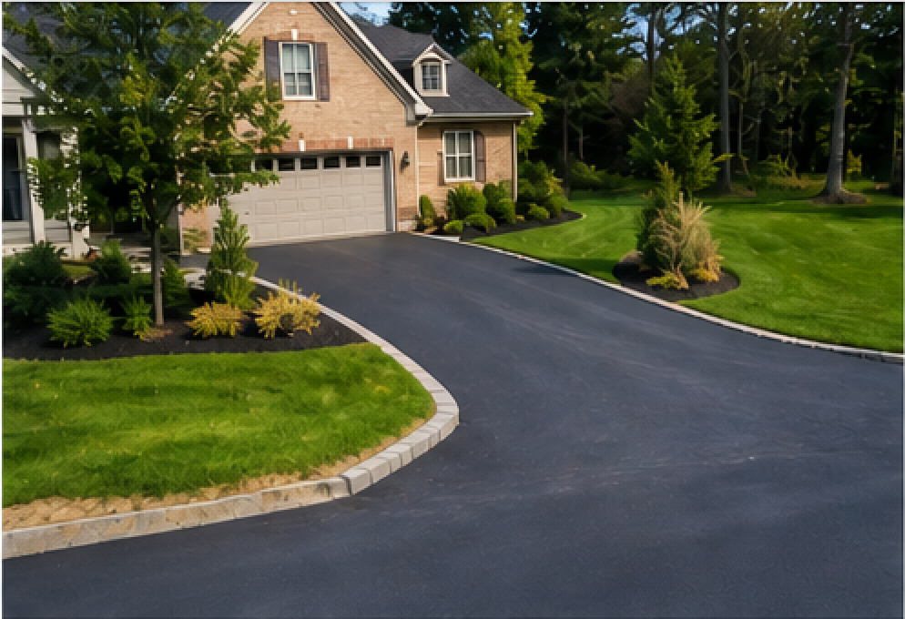
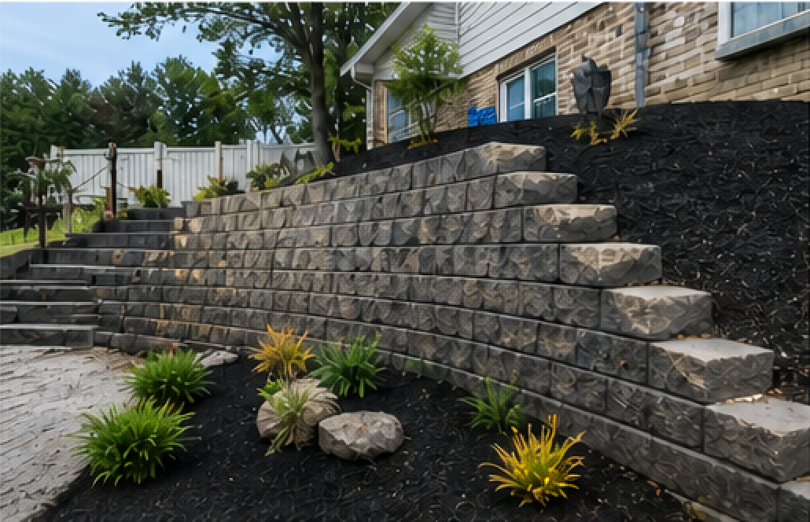
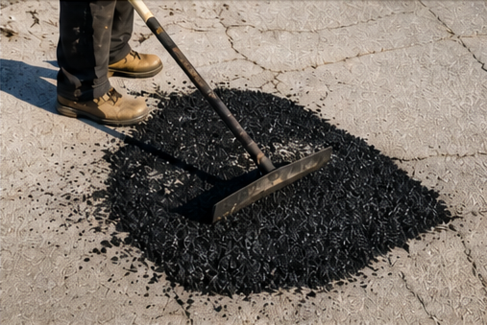
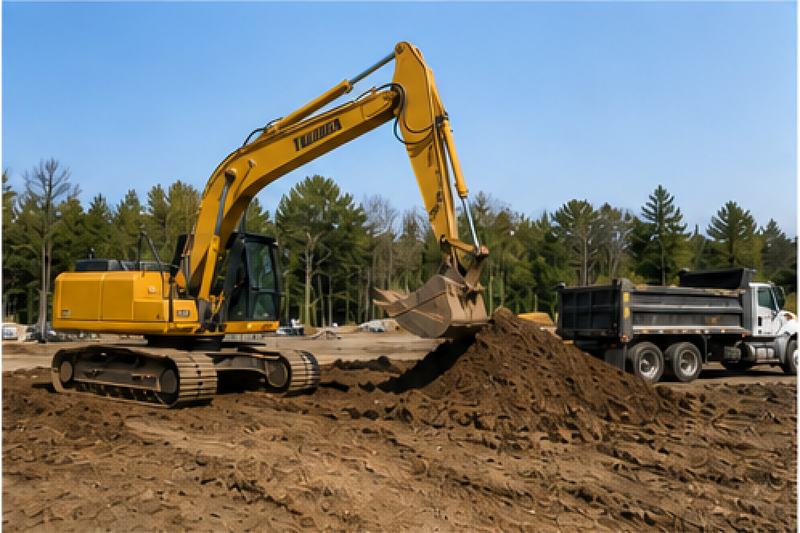
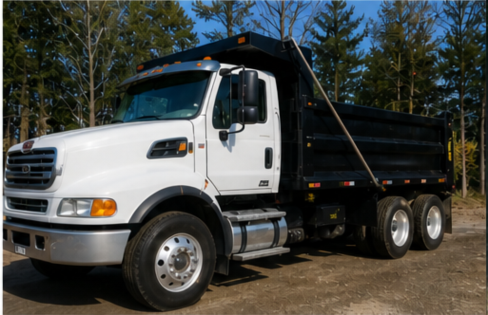
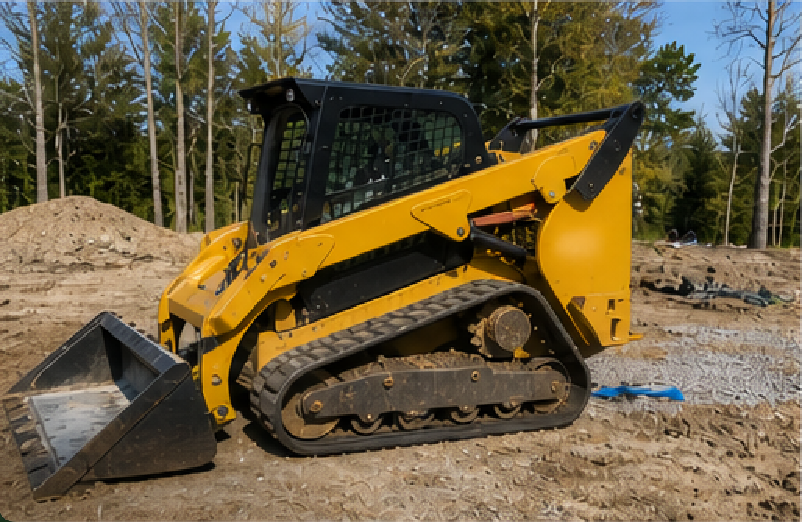
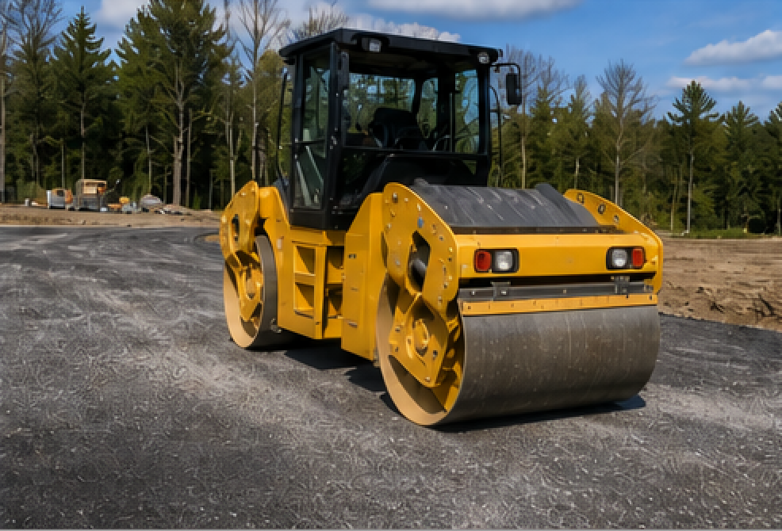

Driveway Paving
New driveway paving and driveway surface improvement for residential and small commercial properties.
Local Paving & Construction Services
W&L Paving provides reliable driveway paving, asphalt repair, retaining wall, site preparation, and small construction support services for residential and commercial properties in Fredericton and surrounding areas.
What We Do
Practical paving and construction support services for local homeowners, property owners, and small commercial projects.
New driveway paving and driveway surface improvement for residential and small commercial properties.
Repair damaged asphalt, uneven surfaces, cracks, and worn areas to improve safety and curb appeal.
Retaining wall work for slope support, outdoor structure, drainage improvement, and cleaner property layout.
Grading, base preparation, small excavation support, and related site work before paving or wall installation.
Small construction support services connected to paving, road work, building support, and engineering-related projects.
Practical field equipment support for paving, retaining wall, and site work projects.
Project Gallery
Explore examples of paving, retaining wall, asphalt repair, and site preparation work. We focus on clean finishes, practical solutions, and reliable service for local properties.




Field Capability
Our team uses practical equipment and field tools to support paving, grading, retaining wall, and site preparation projects safely and efficiently.

Equipment and tools used to support driveway paving and asphalt work.

Support for grading, base preparation, retaining wall work, and site layout.

Practical equipment support for small construction and engineering-related work.
Why Choose Us
W&L Paving focuses on clear communication, honest project discussion, practical work planning, and dependable service for local customers.
About W&L Paving
W&L Paving is a Fredericton-based paving and small construction service business. Our work focuses on driveway paving, asphalt repair, retaining walls, grading, site preparation, and related outdoor construction support.
We aim to provide practical, reliable, and honest service for local homeowners, property owners, and commercial customers.
W&L Paving is guided by a simple standard: Built to Last. Done Right.
Contact W&L Paving today to discuss your project.
Call 506-230-6771Contact Us
Tell us what you need: driveway paving, asphalt repair, retaining wall, site preparation, or construction support.